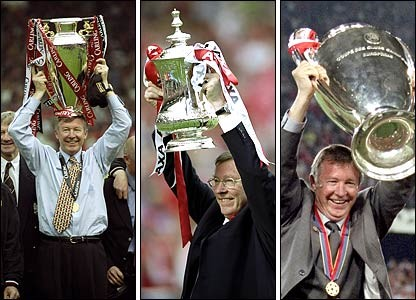

Chương 28

hói “keo cú” của BLĐ Manchester United nhiều phen làm Alex Ferguson lẫn người hâm mộ thất vọng. Martin Edwards bỏ túi riêng hàng triệu bảng, mà lại dè xẻn trong việc đầu tư cho đội bóng. Năm 1996, đại diện của Ronaldo từng mời United mua anh, nhưng BLĐ đội từ chối không chịu đáp ứng mức giá 20 triệu, cùng mức lương 50 000 bảng một tuần của “người ngoài hành tinh”. Theo khung lương ở Old Trafford, dù là cầu thủ hàng đầu cũng không ai được lãnh quá 23 000 bảng. Tháng tám, 1998, các fan đã khấp khởi mừng thầm khi công ty truyền thông BSkyB của ông trùm Rupert Murdoch hỏi mua United: Có BSkyB chống lưng, lo gì không giành được các siêu sao hàng đầu thế giới? Đáng tiếc, cũng như trường hợp Michael Knighton trước đây, thương vụ BSkyB cuối cùng đổ bể.
Tuy vậy, mùa hè 1998, ngoài việc phải tiếp tục xoay sở lấp đầy chỗ trống do Cantona để lại, Alex Ferguson còn cần người thay thế hai cựu binh: Gary Pallister (sang Middlesbrough) và Brian McClair (sang Motherwell). Ông quyết không nhân nhượng, mà đấu tranh tới cùng với BLĐ, buộc họ mở hầu bao. Rốt cuộc họ phải lùi bước, chịu để cho ông mang về ba cầu thủ đắt giá: Dwight Yorke (12.5 triệu), Jaap Stam (10.75 triệu), và Jesper Blomqvist (4.4 triệu).
Dĩ nhiên, để đạt được mục đích, Alex phải trầy vi tróc vẩy. Hai vị lãnh đạo United, Sir Roland Smith và Martin Edwards[1], cực lực phản đối việc mua Dwight Yorke. Từ chuyện Yorke, họ lái sang sở thích đua ngựa của Alex, cảnh báo rằng ông nên tập trung vào công việc, đừng quá chăm lo cho mấy con ngựa đua. Đợi họ nói xong, Alex hỏi ngay một câu đầy thách thức:
-Thế thì các ông muốn chấm dứt hợp đồng với tôi à?
-Không không – Smith và Edwards rối rít – Chúng tôi chỉ đưa ra lời khuyên thôi mà.
-Các ông biết huấn luyện CLB này 12 năm nay khó khăn như thế nào không? Tôi cũng cần phải xả stress chứ. Người ta giải trí bằng những trò khác, còn tôi giải trí và xả stress bằng mấy con ngựa đua đó…Về việc của Yorke, nếu các ông cho là tôi không biết nhìn người, thì thôi, tốt nhất tôi nên đi khỏi đây cho xong!
Nhờ quyết liệt với BLĐ, Alex Ferguson rốt cuộc đã gây dựng thành công một đội hình trong mơ. Sự có mặt của Dwight Yorke đánh thức bản năng sát thủ trong Andy Cole. Cặp Yorke-Cole ăn ý hơn hẳn Cantona-Cole, hay Sheringham-Cole. Lúc Yorke chơi cùng Cole, giữa hai người có sự cộng hưởng, gây nên hiệu ứng tăng bội, và cả hai nâng nhau lên một tầm cao mới. Chứng kiến Yorke-Cole phối hợp, có cảm tưởng họ sinh ra chỉ để đá cùng nhau. Yorke đơn lẻ chỉ là một, Cole đơn lẻ chỉ là một, song khi sát cánh, một cộng một không chỉ là hai, mà phát huy ra tới ba tới bốn. Khi Xavi và các đồng đội hãy còn học việc, Yorke và Cole đã chơi tiki-taka. Với sự đồng điệu tuyệt vời, dường như người này chỉ cần dùng trực giác cũng biết được người kia đang ở đâu, chứ không cần phải quan sát cho mất công. Sự đồng điệu ấy làm nền tảng cho những pha phối hợp như thêu hoa dệt gấm, cho những đường bật tường, những pha chuyền bóng đan xen nhanh như cắt giữa hai tiền đạo da đen. Bóng vừa rời chân Yorke đã đến chân Cole, rồi thoắt cái lại về chân Yorke, khiến hậu vệ đối phương không biết đâu mà lường.
Dưới tuyến phòng thủ, Jaap Stam là một bản hợp đồng tuyệt vời. Thế hệ 1998-1999 chỉ sở hữu một trung vệ ngôi sao là Stam, chứ không có cặp trung vệ thép như Bruce-Pallister hay Vidic-Ferdinand, nhưng không vì thế mà hàng hậu vệ kém đi. Stam tỏa sáng đến độ anh có thể gánh giùm gánh nặnh cho trung vệ còn lại. Dù là Ronny Johnsen hay Henning Berg, ai đá cặp cùng Stam cũng cảm thấy vô cùng tự tin. Phía sau Stam vẫn là Peter Schmeichel vững chắc như bức tường thành, còn hai bên là Gary Neville và Denis Irwin công thủ toàn diện.
Song nếu chỉ được chọn một tuyến để tuyên dương, có lẽ đó là tuyến tiền vệ. Nơi đây có một Roy Keane hừng hực lửa, vừa quyết liệt tràn đầy sức mạnh vừa tinh tế sáng tạo, một Paul Scholes năng nổ, với những cú sút xa mạnh như đại bác. Bên cánh trái là Ryan Giggs lắt léo, uyển chuyển, tốc độ thần phong; cánh phải là David Beckham, chuyên gia tạt bóng số một thế giới.
Beckham khi ấy đã bắt đầu làm ông thầy Alex Ferguson khó chịu. Anh lúc nào cũng kè kè điện thoại bên tai, “tám” chuyện cùng cô bạn gái Victoria. Một tuần bảy ngày, anh bay hai đến ba chuyến sang Ireland thăm người yêu. Tuy vậy, khi trở về sau World Cup 1998 với tư cách “tội đồ dân tộc” (lãnh thẻ đỏ trong trận gặp Argentina), anh vẫn được Alex ủng hộ hết lòng. Như để đền đáp thầy, Beckham thể hiện phong độ đỉnh cao trong sự nghiệp. Mùa 98-99, mỗi lần Beckham tạt bóng, có cảm giác như Manchester United được hưởng phạt đền, vì những đường chuyền của anh chính xác đến từng cen ti mét, đưa bóng đến tận đầu đồng đội. Mỗi lần Beckham đá phạt cũng là một lần ngoạn mục: Bóng từ chân anh sẽ xé gió tạo hình vòng cung, lượn vào góc chết khung thành, gây nên cơn ác mộng cho bất kỳ thủ môn nào.
Một nhân tố khác dẫn đến thành công của United là đội hình họ rất có chiều sâu. Khoảng cách giữa chính thức và dự bị không lớn, nên khi cần, các cầu thủ dự bị có thể trám chỗ không mấy khó khăn. Hậu vệ dự bị có Phil Neville, một cầu thủ thuộc thế hệ vàng, và Wes Brown, lúc bấy giờ được xem là tài năng trẻ rất có triển vọng. Tiền vệ dự bị có Nicky Butt, Jesper Blomqvist, Jordi Cruyff; chỉ chơi với hàng tiền vệ này, Quỷ Đỏ cũng đủ sức cạnh tranh ngôi vô địch Anh. Solskjaer và Sheringham thì không cần phải nhắc. Tuy không phối hợp ăn ý như cặp Cole-Yorke, bù lại, họ có khả năng chạy chỗ và chọn vị trí cực tốt, luôn có mặt đúng lúc để ghi bàn. Solskjaer có lẽ là trường hợp độc nhất vô nhị. Sau mùa đầu tiên ở Old Trafford, anh chỉ giữ vai trò dự bị, vậy mà vẫn được xếp vào hàng ngũ những Quỷ Đỏ huyền thoại[2].
Nhờ Cúp C1 cải tổ, tăng số đội lên, Manchester United được tham dự với tư cách á quân nước Anh. Không tốn hơi sức để vượt qua LKS Lodz (Ba Lan) ở vòng sơ loại, họ lọt đúng vào bảng tử thần trong vòng đấu bảng. Brondby, đội bóng cũ của Schmeichel, cam chịu thân phận lót đường, song thử thách lớn đến từ hai đại gia Bayern Munich và Barcelona. United trút mưa gôn vào lưới Brondby (6-2 và 5-0), và hòa cả bốn trận còn lại, trong đó hai trận hòa cùng tỷ số 3-3 với Barcelona là đỉnh cao của bóng đá tấn công. Quỷ Đỏ lẽ ra đã thắng trận lượt đi ở Old Trafford, nếu trọng tài không ưu ái cho Barca hai quả phạt đền. Lượt về ở Camp Nou, Yorke lập cú đúp, Cole cũng đóng góp một bàn, trước khi Rivaldo kịp thời tỏa sáng giành lại một điểm cho chủ nhà. Nhưng như thế vẫn là chưa đủ cho đội bóng xứ Catalonia. Họ đành ngậm ngùi nhìn hai kình địch bước vào vòng trong.
Tại giải VĐQG, United khởi đầu chuệch choạc. Thắng hai hòa hai trong bốn trận đầu tiên, đội phơi áo 0-3 trước Arsenal trong trận thứ năm. Đến đầu tháng 12, khi đã ổn định phong độ, leo lên được ngôi đầu, họ lại phải đón nhận tin xấu: Brian Kidd bỏ Old Trafford sang làm HLV Blackburn Rovers.
Tuy đôi khi có những bất đồng, nhưng Alex Ferguson vẫn rất tín nhiệm Brian Kidd. Bởi vậy, khi Kidd thông báo quyết định ra đi, ông cảm thấy vô cùng bất ngờ và thất vọng. Có lẽ đã chán với công việc của một người thứ hai, Kidd muốn tìm thử thách mới trên cương vị HLV trưởng. Không may cho Kidd, dưới sự dẫn dắt của ông, Blackburn rơi từ ngoại hạng xuống hạng nhất.
Alex đánh giá cao và ghi công Kidd đã đổ nhiều tâm huyết đào tạo ra thế hệ vàng. Mặt khác, ông cho rằng cấp phó của mình bị yếu về tâm lý, nên không đủ bản lĩnh làm HLV trưởng. Do nhận xét này mà Kidd đem lòng giận sếp cũ. Song khi bình tâm nghĩ lại, chắc Kidd nhận ra Alex nói đúng. Bằng chứng là sau Blackburn, Kidd trở về với chức trợ lý, không nhận lời giữ ghế HLV trưởng cho bất kỳ CLB nào nữa. Về phần Alex, ông bổ nhiệm Steve McClaren, một HLV còn khá vô danh, làm trợ lý mới.
Dù có Brian Kidd hay không, chỉ cần Alex Ferguson giữ vững tay chèo, con thuyền Manchester United luôn đi đúng hướng. Đầu năm mới 1999, Quỷ Đỏ giành thắng lợi trước Liverpool tại vòng bốn Cúp FA, trong một trận đấu không giành cho người yếu tim. Ngay phút thứ ba, “thần đồng” Michael Owen đã đánh đầu mở tỷ số. Như bị “chạm nọc”, đội chủ nhà tràn lên áp đảo, đẩy đối phương vào thế phòng ngự thụ động. May mắn không đứng về phía họ, khi thủ quân Roy Keane hai lần dứt điểm trúng khung gỗ. Tuy vậy, United không nản lòng: từng làn sóng đỏ vẫn tràn ngập phần sân Liverpool. Phút 88, từ pha đá phạt hoàn hảo của Beckham, Cole đánh đầu chuyền ngang cho Yorke lao vào dứt điểm gỡ hòa 1-1. CĐV United thở phào nhẹ nhõm, chuẩn bị ra về chờ trận tái đấu ở Anfield. Nhưng… chưa xong! Đúng phút cuối cùng, Paul Scholes khống chế thành công đường chuyền dài của Jaap Stam, nhả bóng cho Solskjaer. “Siêu dự bị” lạnh lùng nã phát súng “ân huệ”, đá đối thủ bay luôn khỏi cúp. Chỉ hai tuần sau, Solskjaer tiếp tục tỏa sáng rực rỡ trong khuôn khổ giải VĐQG. Vào sân thay người ở phút 72 trong trận gặp Nottingham Forest, anh ghi một mạch bốn bàn trong vòng 13 phút, giúp United thắng đậm 8-1.[3]
Đầu tháng ba, United phải đấu liên tiếp hai trận quan trọng: Mùng ba gặp Inter Milan, tứ kết Cúp C1; mùng bảy gặp Chelsea, vòng sáu Cúp FA. Vắng mặt cầu thủ số một thế giới Ronaldo, đội hình Inter đến Old Trafford vẫn bao gồm những cái tên hết sức đáng gờm như Roberto Baggio, Youri Djorkaeff, và Ivan Zamorano. Đội chủ nhà vượt lên dẫn trước 2-0, với hai bàn thắng đúc cùng một khuôn: Đều là Dwight Yorke đánh đầu từ những quả tạt thần sầu của David Beckham. Inter lẽ ra kiếm được bàn thắng quý giá trên sân khách, nếu Peter Schmeichel không kịp trổ tài, thực hiện một trong những pha cứu nguy ngoạn mục nhất trong lịch sử túc cầu: Anh tung người, dùng bắp tay cản phá cú đánh đầu sấm sét từ cự ly… bốn mét của Zamorano. Trong trận kế tiếp với Chelsea, United tung ra sân nhiều cầu thủ dự bị, nhưng cũng đủ sức kiếm được trận hòa không bàn thắng, buộc hai bên phải tái đấu tại Stamford Bridge.
Với các trụ cột đã phục hồi thể lực, Quỷ Đỏ không gặp khó khăn trên sân Chelsea. Yorke lại lập cú đúp, đem về chiến thắng 2-0 đầy thuyết phục. Thử thách lớn hơn đón chờ đội ở đất Ý, nơi Ronaldo đã trở lại trong đội hình chính Inter. Tuy quan ngại, nhưng Alex Ferguson có cách đối phó “người ngoài hành tinh”. Để Henning Berg đá cặp cùng Jaap Stam, ông tung Ronny Johnsen lên hàng tiền vệ, chỉ đạo Johnsen và Keane chơi bài phòng ngự từ xa, “bắt chết” Ronaldo ngay từ tuyến hai. Sau 60 phút mờ nhạt vì bị theo kèm sát sao, Ronaldo rời sân, nhường chỗ cho Ventola. Vừa xuất hiện, Ventola nhem nhúm hy vọng cho Inter bằng bàn mở tỷ số, song Paul Scholes nhanh chóng gỡ hòa, ấn định kết quả chung cuộc 3-1[4].
Vừa leo qua núi lại gặp núi cao hơn, United phải đối đầu Arsenal và Juventus ở bán kết FA và C1. Nếu trận hòa 0-0 với Arsenal ngày 11 tháng tư không để lại ấn tượng đặc biệt, cuộc tái đấu ba ngày sau khiến người hâm mộ mãn nhãn, trải qua đủ cung bậc xúc cảm. David Beckham sớm đưa United vượt lên, nhưng Bergkamp gỡ hòa trong hiệp hai. Từ đó, mọi thứ đều chống lại Quỷ Đỏ. Năm phút sau bàn thắng của Bergkamp, Roy Keane nhận thẻ đỏ rời sân. Đến những phút bù giờ, Arsenal được hưởng một quả penalty, sau pha phạm lỗi của Phil Neville trong vòng cấm. “Lẽ nào? Lẽ nào lại thế?”, Alex cay đắng than thầm. Bergkamp chạy đà, rồi sút cực căng vào góc phải, Schmeichel bay người, hóa giải thành công. Không có chiến thắng cho Pháo Thủ, mà là 30 phút hiệp phụ.
Chỉ vào sân từ ghế dự bị, Ryan Giggs hãy còn sung sức, liên tục tra tấn hàng thủ đối phương trong giờ đấu thêm. Phút 109, nhận đường chuyền từ…Patrick Vieira, tiền vệ xứ Wales tự tin dẫn bóng vào phần sân Arsenal. Ban huấn luyện United đứng cả lên, ai cũng nghĩ Giggs sẽ khoét vào vị trí của Lee Dixon, vì lão tướng này đã thấm mệt sau hơn trăm phút căng như dây đàn. Không ngờ Giggs còn làm hơn thế nữa: Anh chạy một mạch 60 mét, không những đột phá qua Dixon, mà còn tả xung hữu đột, cho Patrick Vieira và Martin Keown ngửi khói. Hậu vệ cuối cùng của Arsenal, Tony Adams, tung người chuồi bóng. Quá trễ: Bóng từ chân Giggs đã làm rung nóc lưới thủ thành David Seaman. Chỉ trong 10 giây ngắn ngủi, Giggs làm nên điều kỳ diệu, ghi bàn thắng đẹp nhất trong lịch sử 140 năm Cúp FA! 10 Quỷ Đỏ ca khúc khải hoàn trước 11 Pháo Thủ! HLV trưởng Arsenal, Arsene Wenger, cay cú đến độ từ chối bắt tay Alex Ferguson.
So với Arsenal, Juventus còn đứng trên một bậc. Ba lần liên tiếp vào chung kết Cúp C1 (1996-1998), “Lão Phu Nhân” lúc bấy giờ được coi là đội bóng mạnh nhất lục địa già. Ngay tại Old Trafford, Zinedine Zidane và đồng đội quần cho chủ nhà một trận thở không ra hơi. Bị thất thế toàn diện, mãi đến phút 90, United mới kiếm được bàn gỡ hòa 1-1 nhờ công Ryan Giggs. Mọi chuyện tưởng như an bài, khi chỉ sau 11 phút của trận lượt về, Filippi Inzhagi lập cú đúp giúp Juve dẫn 2-0. Chỉ đến lúc này, người ta mới nhận thấy sức mạnh tinh thần của Quỷ Đỏ lớn lao nhường nào. Bị dồn vào thế chân tường, toàn đội bỗng bùng nổ, hăng hái chơi với…200% sức lực. Không hổ danh thủ quân, Roy Keane vừa đốc thúc toàn đội tiến lên vừa đích thân lăn xả như một cảm tử quân thà chết chẳng lùi. Phút 24, Beckham đá phạt góc, Keane bật cao đánh đầu, rút ngắn tỷ số. Phút 34, đến lượt Cole tạt bóng, Yorke đánh đầu: hai đều! Tình thế trong phút chốc đảo ngược: Nếu kết quả 2-2 giữ nguyên, United sẽ vào chung kết nhờ luật bàn thắng sân khách. Juventus trở nên cuống quít, trong khi đội khách bình tĩnh rút về phòng thủ, dàn thế trận chờ đòn phản công. Gần cuối hiệp hai, Yorke dùng kỹ thuật cá nhân lừa qua hai hậu vệ Juventus, bị thủ thành Peruzzi đốn ngã trong vòng cấm địa.Trọng tài không cần thổi penalty, bởi Cole kịp lao theo, đá bồi vào lưới trống, hoàn tất cuộc ngược dòng không tưởng!
Lọt vào chung kết hai cúp, so kè quyết liệt cùng Arsenal tại giải VĐQG, sỹ khí tại Old Trafford lên cao đến cực độ. “Chúng tôi cảm thấy mình bất khả chiến bại”, Peter Schmeichel thuật lại. Tuy thế, sợ nói trước bước không qua, Alex Ferguson không cho phép học trò chủ quan. Ông cấm cầu thủ không ai được nhắc đến cú ăn ba trước giới truyền thông. Bản thân ông dĩ nhiên chẳng bao giờ đề cập chuyện đó. Ở đây, ta thấy Alex thận trọng hơn hẳn “khắc tinh” Arsene Wenger. Những năm sau này, có khi Arsenal mới vào đến vòng hai cúp C1, Wenger đã mơ về khả năng “ăn bốn”! Kết cuộc chỉ là xôi hỏng bỏng không, chẳng được cúp nào.
Sau khi bị Ryan Giggs đá văng, Arsenal tuyên bố: Bị loại cũng tốt, vì từ nay có thể toàn tâm toàn ý cho giải ngoại hạng. Quả thật, đến tháng tư, họ đánh bật được United xuống hạng nhì. Có điều, ngày vui của Pháo Thủ ngắn chẳng tầy gang: Với chiến thắng 1-0 trước Middlesbrough ngày chín tháng năm, Quỷ Đỏ giành lại ngôi đầu. Trước vòng đấu cuối cùng, họ hơn Arsenal đúng một điểm. Nếu thắng Tottenham tại Old Trafford, United sẽ đăng quang, bất chấp kết quả trận Arsenal-Aston Villa. Như một cữ dượt nhẹ, Beckham và Cole mỗi người ghi một bàn, đem về ba điểm cần thiết. Cú ăn ba vậy là xong một.
Newcastle, đối thủ của United ở chung kết Cúp FA, không còn mạnh như dưới thời Kevin Keegan. Đối đầu cùng Ác Là, Alex mạnh dạn cho Nicky Butt, Jaap Stam, và Dwight Yorke nghỉ ngơi. Ông cũng định để Beckham dưỡng sức, nhưng anh chàng lắc đầu quầy quậy “Không không, cho con chơi bố ơi!” Chẳng cần tung hết sức, Quỷ Đỏ vẫn thắng dễ 2-0, với các bàn thắng do công Sheringham và Scholes. Ba bước tới thiên đàng như thế đã xong hai.
Thế nhưng, bước cuối cùng mới là khó nhất. Cầu thủ United ăn mừng Cúp FA một cách vô cùng điều độ: Không ai uống rượu, cũng không ai thức khuya. Sự thận trọng là cần thiết, bởi đối thủ của họ trong trận chung kết C1 tại Camp Nou là Bayern Munich. Trong vòng đấu bảng, United và Bayern đã hai lần đọ sức bất phân thắng bại, song lần này, đội bóng Anh chịu thiệt về lực lượng, do Roy Keane và Paul Scholes lãnh thẻ vàng ở vòng bán kết, buộc phải vắng mặt.
Chính những lúc thế này, mới thấy chiều sâu đội hình là cần thiết. Không Keane đã có Butt, không Scholes cũng còn Blomqvist. Vấn đề là Blomqvist chỉ quen bám cánh, nên nếu sử dụng cầu thủ Thụy Điển, buộc phải kéo Ryan Giggs hoặc Beckham vào giữa. Dùng Giggs ở vị trí tiền vệ trung tâm thì sẽ phải hy sinh những pha đột phá xé gió bên đường biên, dùng Beckham sẽ thiếu vắng những đường tạt chết người. Phương án nào cũng có khuyết điểm, nhưng trong hai đành chọn một. Alex quyết định cho Beckham đá giữa, đồng thời đẩy Giggs sang cánh phải, nhường cánh trái cho Blomqvist. Đội hình ra quân tại Camp Nou ngày 26 tháng năm, 1999 như sau:
Thủ môn kiêm đội trưởng: Peter Schmeichel; Hậu vệ: Gary Neville, Denis Irwin, Ronny Johnsen, Jaap Stam; Tiền vệ: Ryan Giggs, Jesper Blomqvist, David Beckham, Nicky Butt; Tiền đạo: Dwight Yorke, Andy Cole.
Xứng danh Hùm Xám, Bayern Munich vượt lên ngay phút thứ sáu, bằng một pha phối hợp đá phạt bài bản. Markus Babbel chen vào đứng chung với hậu vệ United, rồi hụp xuống tránh bóng, để Mario Basler đá xuyên rào, mở tỷ số. Dường như những chiếc áo đỏ bị sức ép quá lớn của một trận chung kết đè nặng. Trong những phút còn lại của hiệp một, họ chơi lúng túng thấy rõ. Cặp sát thủ Cole-Yorke đặc biệt mờ nhạt.
Giờ nghỉ giữa hai hiệp, Alex Ferguson không nổi giận. Ông thiết tha nhắn nhủ học trò:
-Nếu chúng ta thua hôm nay, các con sẽ phải lên bục nhận huy chương bạc. Lúc ấy, các con đứng gần cúp lắm, gần trong tấc gang, nhưng mà không sao chạm được nó. Hãy nghĩ mà xem, cơ hội như thế này ít khi lặp lại, trong tương lai chưa chắc có lần thứ hai.Đã đến thật gần lại bỏ lỡ, không tiếc lắm hay sao? Rồi đây, các con sẽ phải hối hận cả một đời. Vậy nên hãy cố gắng lên, không được cho phép mình thất bại. Nếu các con không tận hết sức lực, thì đừng trở về gặp ta.
“Đó là một trong những bài “diễn văn” hay nhất nhất tôi từng nghe”, Jaap Stam nhận định, “nghe xong những lời đó, kẻ nhút nhát cũng biến thành chiến binh”. “Cái ý nghĩ đi ngang qua cúp mà không chạm được khiến tôi ớn lạnh”, Giggs bổ sung, “lời của thầy thúc đẩy toàn đội”.
Lên tinh thần, United thi đấu tốt hơn trong hiệp hai. Bayern vẫn tỏ ra nguy hiểm, hai lần sút rung khung gỗ, song Quỷ Đỏ giữ được thế trận giằng co, kiên trì đợi đối thủ lộ điểm yếu. Phút 67, Alex đưa Sheringham vào thay Blomqvist. Phút 81, ông tung nốt Solskjaer ra sân, thế chỗ Andy Cole, chuyển sang chơi với đội hình ba tiền đạo. Trong khi đó, phía Bayern cho lão tướng Lothar Matthaus ra nghỉ…
Phút 90 đã qua, người ta đã gắn vào cúp bạc những dải băng mang màu áo Bayern Munich. Lennart Johansson, chủ tịch UEFA, rời khỏi chỗ ngồi, chuẩn bị đi trao giải. Ngay cả Alex Ferguson cũng cúi đầu chấp nhận số phận. Đúng vào lúc ấy, Manchester United được hưởng phạt góc.
Đã tuyên bố rời đội sau khi mùa giải kết thúc, Peter Schmeichel lòng nóng như lửa đốt. Không muốn nhận thất bại trong lần cuối cùng khoác màu áo đỏ, chàng thủ môn Đan Mạch rời bỏ khung thành, lao vào vòng cấm địa đối phương, quyết tâm đánh ván bài được ăn cả, ngã về không. Bóng được Beckham câu vào vòng cấm, sượt đầu Schmeichel, chạm phải Yorke, rồi đến chân hậu vệ Thorsten Fink, người trước đó vào thay Matthaus. Fink phá bóng ra, đúng ngay vào chỗ Ryan Giggs đang đứng. Pha sút cầu may của Giggs đi thiếu lực, không mong gì thành bàn, nhưng Sheringham có mặt đúng lúc, đệm thêm một cú, cháy lưới Bayern. Nếu Matthaus vẫn còn trên sân, mọi chuyện có thể đã rất khác. Cầu thủ lão luyện như Matthaus ắt không phá bóng thiếu dứt khoát như Fink.
“Chuẩn bị đá hiệp phụ thôi”, Steve McClaren hô, “Trở về đội hình 4-4-2”. “Từ từ đã chú”, Alex chỉnh ngay, “Trận đấu đã hết đâu”. Quả thật chưa hết. Phút 93, phút bù giờ cuối cùng, United lại được hưởng phạt góc. Vẫn là Beckham với cú tạt sở trường, Sheringham đánh đầu nối, đưa bóng vào góc xa cho Solskjaer nhanh chân dứt điểm. Oliver Kahn chỉ biết bất lực nhìn theo. Không nghi ngờ gì nữa, Camp Nou năm 1999 đã chứng kiến trận chung kết C1 kịch tích nhất xưa nay, khi chỉ trong vòng 2 phút, lịch sử thay đổi 180 độ. Cánh nhà báo đã viết xong bài tường thuật, với những lời tụng ca có cánh giành cho Bayern và những chỉ trích nặng nề nhắm vào United, bỗng phải xé đi hết, viết lại từ đầu[5].
Ryan Giggs là cầu thủ đầu tiên chạy đến ôm Alex Ferguson. 13 năm trước, khi họ gặp nhau lần đầu, Alex mới chân ướt chân ráo đến Anh, chưa biết mình trụ lại được bao lâu; Ryan hãy còn là cậu bé con miệng còn hơi sữa mang họ Wilson. Đêm nay, dưới bầu trời Barcelona, cả hai đều đi vào huyền thoại. Trò tuy mới 25, nhưng đã là cầu thủ thâm niên nhất tại Old Trafford; thầy chính thức bước vào ngôi đền thiêng, chung hàng với Matt Busby, Brian Clough, Jock Stein…Alex biết rõ, dù cho có hàng tá chức VĐQG và Cúp QG, một HLV không thể trở thành vĩ đại nếu thiếu Cúp C1. Nay bộ sưu tập danh hiệu đã hoàn tất, ông không còn gì phải day dứt. Đăng quang ngôi vua châu Âu, Manchester United là CLB thứ tư trong lịch sử hoàn tất cú ăn ba, sau Celtic, Ajax và PSV Eindhoven.
Có người nói: United thắng nhờ may mắn, điều đó đúng chăng? Hiển nhiên, may mắn luôn dự phần trong mọi chiến thắng, nhưng nếu nhìn vào những lá thăm, ta mới thấy Quỷ Đỏ thật ra cực kỳ xui xẻo. Ngay ở vòng đầu, họ đã rơi vào bảng tử thần, gặp phải Bayern Munich và Barcelona, vào vòng trong cũng toàn đụng phải những đối thủ hoặc ngang ngửa hoặc ở chiếu trên như Inter và Juventus. Để so sánh, hãy nhìn vào hành trình của Juventus mùa 1995-1996: Chung bảng với Borussia Dortmund, Glasgow Rangers và Steaua Bucarest, tứ kết gặp Real Madrid[6], bán kết gặp Nantes, mãi đến trận cuối cùng mới chạm trán với đối thủ ngang sức ngang tài là Ajax Amsterdam.
Ngay cả ở Cúp FA, United cũng xui đến không thể xui hơn: Liên tiếp phải gặp các cường địch: Liverpool, Chelsea, Arsenal. Các đối thủ còn lại như Middlesbrough, Fulham, Newcastle cũng toàn đội ngoại hạng, không hề có một đội hạng nhất, hạng nhì nào. Có thể nói, dù là ở VĐQG, Cúp FA, hay C1, đường đến chức vô địch của United đều thuộc loại gian nan nhất trong lịch sử. Song le, càng gian nan khó khăn, thì vinh quang càng lớn.
Mùa 1998-1999, đội chủ sân Old Trafford thể hiện sức mạnh kinh hoàng trên hàng công. Họ ghi tổng cộng 80 bàn trong khuôn khổ giải VĐQG, trong khi đội hạng nhì Arsenal chỉ có 59. Dwight Yorke là tiền đạo United đầu tiên kể từ George Best giành giải Vua Phá Lưới Nước Anh, với 18 bàn thắng (ngang với Owen và Hasselbaink). Tính tất cả các giải, số bàn thắng của Yorke lên tới 29. Andy Cole theo sát sau với 25, thứ ba là Solskjaer, dù chỉ dự bị song có 18 lần phá lưới đối thủ. Các tiền vệ như Beckham, Giggs, Scholes cũng nhả đạn đều đặn, đóng góp từ chín đến 11 bàn. Phong độ chói sáng giúp Beckham về nhì trong danh sách Cầu Thủ Xuất Sắc Nhất Thế Giới của FIFA và Quả Bóng Vàng của France Football.
Đương nhiên, người xứng đáng được tung hô nhất là HLV trưởng. Ba thành phố Glasgow, Aberdeen, và Manchester lần lượt phong Alex làm Công Dân Danh Dự. Cao quý hơn nữa, nữ hoàng Elizabeth II phong cho ông tước hiệp sỹ. Alex Ferguson từ nay trở thành Sir Alex Ferguson.Tháng 10, 1999, trận cầu tôn vinh Sir Alex được tổ chức giữa Manchester United và hội tuyển Các Ngôi Sao Thế Giới.
Dưới sự huấn luyện của Alex, ngoài lối đa tấn công hoa dạng, đẹp mắt, một đặc trưng nổi bật của United là sức mạnh tinh thần. Dù đối thủ mạnh đến đâu, dù bị dẫn trước bao nhiêu bàn, đội vẫn bền bỉ chiến đấu không sờn chí. Trong khi đội bạn thường mất tập trung vào những phút cuối, đối với Quỷ Đỏ, phút 90 hay phút thứ nhất không khác gì nhau, còn một phút thì quyết chiến một phút, còn một giây thì quyết chiến một giây. Vậy nên, những cuộc lội ngược dòng khó tin, những bàn thắng vào phút 89 hay 90, đã làm nên một “thương hiệu” rất riêng cho United. Nói đúng hơn, đó là thương hiệu Alex Ferguson, vì những đặc điểm trên cũng có thể thấy ở Aberdeen trong thập niên 1980.
Giữa ánh hào quang của cú ăn ba, nhà xuất bản (NXB) Hodder Headline ứng trước cho Sir Alex 1.1 triệu bảng, đặt ông viết hồi ký. Các NXB khác dè bỉu: Bọn Hodder điên rồi, trả hơn một triệu, làm sao mà lời cho nổi? Chỉ trả 600 000 thôi, cũng lỗ chỏng gọng rồi. Họ không ngờ, cuốn Quản Lý Đời Tôi (Alex Ferguson – Hugh McIlvanney) trở thành một best-seller, bán được hơn 220 000 bản bìa cứng, và 100 000 bản bìa mềm: Hodder Headline không những lời, mà còn lời to. Người hâm mộ phải xếp hàng dài chờ mua sách; nhiều người đợi đến lượt mình thì sách đã hết sạch. Cuối năm 1999, hồi ký Sir Alex còn được bầu chọn là Sách Hay Nhất Trong Năm.
Trong một mùa đỉnh cao, liệu có điều gì khiến Sir Alex chưa được thỏa mãn? Có đấy, đó là việc FWA và PFA “hùa nhau” trao giải Cầu Thủ Xuất Sắc Nhất Nước Anh cho David Ginola. “Năm ấy chúng tôi thắng tất, chỉ có…cúp đua thuyền là không thắng thôi”, Sir bức xúc, “Thế mà bọn họ vinh danh Ginola. Tin nổi không?”

Cú ăn ba vĩ đại (ảnh: Oreillyskills.wordpress.com)
[1] Sir Roland Smith là chủ tịch hội đồng quản trị United PLC, Martin Edwards là giám đốc điều hành United PLC kiêm chủ tịch CLB bóng đá Manchester United.
[2] Vừa mua xong Yorke, United nhận được lời hỏi mua Solskjaer từ Tottenham. Alex Ferguson để Solskjaer tự quyết định chuyện đi hay ở. Tiền đạo Na Uy từ chối White Harte Lane, chấp nhận ở lại Old Trafford trong vai trò dự bị.
[3] Manchester United giữ cả hai kỷ lục thắng đậm của giải ngoại hạng Anh: Thắng đậm nhất trên sân nhà (9-0 trước Ipswich), và thắng đậm nhất trên sân khách (8-1 trước Forest). Với bốn bàn vào lưới Forest, Solskjaer lập kỷ lục cầu thủ dự bị ghi nhiều bàn thắng nhất trong một trận cầu.
[4] Trước trận đấu, cầu thủ hai bên “kênh” nhau. Simeone, người “to mồm” nhất của Inter, hò hét vang trời nhằm trấn áp tinh thần đội khách. Schmeichel liền đáp trả. Chất giọng vang như chuông của anh ngay lập tức át đi Simeone. United thắng từ khi bóng chưa lăn!
[5] Để tiết kiệm thời gian, phóng viên đều vừa xem vừa viết bài tường thuật- bình luận trận đấu, không ai để hết trận rồi mới viết. Thường thì đến phút 85-90, họ đều đã viết bài xong, chỉ đợi hết giờ để nộp. Mỗi khi có trận của United, họ đều lo ngay ngáy, bởi khả năng phải bổ sung và chỉnh sửa lại bài là rất cao.
[6] Thời điểm 1995-1996, Real Madrid hoàn toàn lép vế so với Juventus. Ngay năm 1998, việc họ thắng Juve để vô địch C1 cũng là điều bất ngờ.